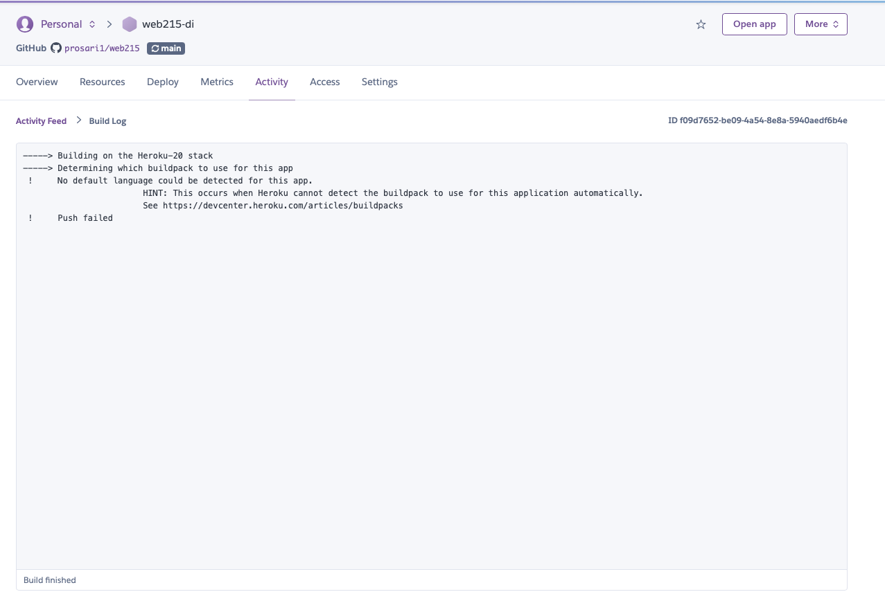
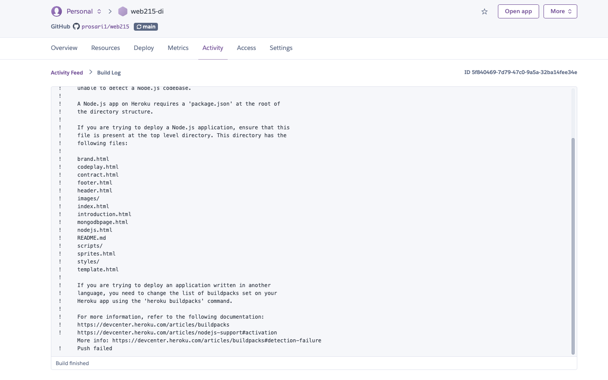

Heroku Failed
I've tried to connect my application based on two options. Following the steps provided by heroku to deploy via terminal which didn't work. It showed this following message.
The second time I tried to install the "buildpacks" because I thought that would be the problem but it didn't work again. This time I decided to connect my github repo directly with heroku. The videos I watched were basically the same instructions provided on Heroku website.
Heroku Buildpacks 